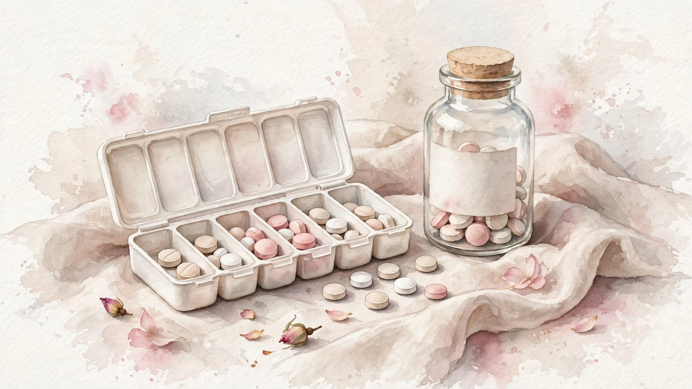

トップ ＞ インナーケア・サプリ ＞ ピルケースに移し替えるときの注意点
ピルケースに移し替えるときの注意点

施術のお客様との会話で、「サプリは1週間分のピルケースに移し替えてます」という声をよく聞きます。曜日ごとに仕切られたケースは、飲んだかどうかが一目で分かり、続けやすさの工夫として優秀です。ただ、移し替えには、便利さと引き換えに気をつけたい点もあります。この記事では、ピルケースへ移し替えるときの注意点を整理します。
移し替えで「手元から離れる」情報
元の容器や箱には、商品名、一日摂取目安量、賞味期限、原材料名、摂取上の注意といった表示がそろっています。ところが、粒をケースに移した瞬間、それらの情報は粒から読み取れなくなります。似た色や形の粒が複数あると、どれがどの商品だったかも分からなくなります。
つまり移し替えは、「表示をどう手元に残すか」とセットで考える作業です。表示と切り離してしまうと、目安量の確認も、期限の確認もできなくなります。私は移し替えをおすすめしないのではなく、情報を残す工夫と一緒に使うものだと考えています。
工夫は「写真・メモ・仕切り」の3点
ひとつ目は写真です。移し替える前に、元の容器と裏面の表示をスマートフォンで撮っておきます。商品名と目安量、賞味期限が写っていれば、後からいつでも照らし合わせができます。ふたつ目はメモです。ケースの蓋の内側や底に、商品名と賞味期限を書いた小さなテープを貼っておくと、写真を探す手間なくその場で確認できます。
みっつ目は仕切りと色分けです。複数の商品を1つのケースに入れる場合は、仕切りで列を分け、商品ごとに置く場所を固定します。家族の分とはケース自体を分け、色違いにするなどの目印も有効です。「誰の・何の・いつまでの粒か」がケースを見て分かる状態を作るのが目的です。
詰める量は「数日分」までを目安に
ピルケースは、元の容器ほど密閉性が高くないことが多く、湿気や光の影響を受けやすい作りです。詰め替えた粒は、長く置くほど表示の保管条件から離れていきます。私は、詰める量は数日分、長くても1週間分までを目安にし、残りは元の容器に入れたまま保管するのが無難だと考えています。
また、ケースは定期的に洗って乾かしてから使います。前の粒の粉や欠けが残っていると、新しい粒と混ざって見分けがつきにくくなります。そして、移し替えた後に「何の粒か分からないもの」が残った場合は、無理に飲まず、判断材料がないものとして扱ってください。もったいない気持ちは分かりますが、表示と照らせない粒については、安全側に倒すのが基本です。
ケース選びの小さなポイント
ケースそのものにも、選び方のポイントがあります。仕切りの数は、1日に飲む回数と種類の数に合っているか。透明で中身が見えるものは、残量と飲み忘れが目で確認できます。片手で開けられる蓋は、忙しい朝の動作に合います。洗って乾かせる素材であれば、衛生面でも安心です。
自宅用と旅行用でケースを使い分ける方法もあります。旅行用は小さく割り切り、自宅用は曜日表示のあるものにする、といった具合です。ケースは「飲む仕組み」を作る道具です。表示の情報を残す工夫と合わせて、自分の生活に合う形を選んでください。
移し替えのタイミングを決めておくことも大切です。週の初めなど、決まった曜日にまとめて詰める習慣にすると、詰め忘れや二重詰めが減ります。詰める作業のときに賞味期限と残量を目で確認することになるため、棚卸しを兼ねられます。移し替えは、表示と向き合う時間でもあるのです。
元の容器の置き場所も、詰め替えとセットで決めておきます。詰めた後の容器は、表示の保管条件に沿った場所へ戻し、ケースとは別の定位置を作ってください。詰め替えのたびに容器を探すようでは、習慣が続きません。「詰める・戻す・飲む」の動線が短いほど、移し替えは無理なく続けられます。
セラフィナ「移し替えたら、元の表示の写真もセットで残しておくのが安心だね」

セラフィナ｜美容の道具箱の案内役
「量と表示が分かれば、美容は失敗しない。」——セラフィナと白猫のモコが、買う前のチェックポイントを案内します。綺麗になりたい気持ちに正直に、でも表示は冷静に読むのが、このサイトの約束です。